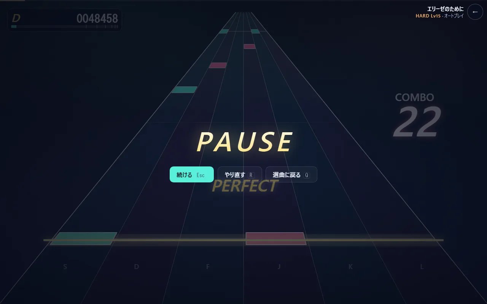

ノーツ 1 つが流れてきて、叩いて、判定が出るまで（TypeScript）
PLAY を押してから、1 つのノーツに「PERFECT」が出るまでを、呼ばれる順にたどります。
登場するもの
| もの | ファイル | 一言で |
|---|---|---|
Play |
Play.tsx | プレイ画面。React の部品で、読み込み・毎フレームのループ・入力の受け付けを持つ |
PlayEngine |
engine.ts | 1 回のプレイの司令塔。時計・音の予約・判定をまとめて動かす |
SongClock |
clock.ts | 「いま聞こえている曲の位置（秒）」を答える |
EventScheduler |
scheduler.ts | 曲の音を少し先まで予約していく |
GameSession |
session.ts | ノーツごとの状態（まだ・押している途中・済み）とコンボ・スコア |
drawFrame |
highway.ts | 1 フレームの絵を描く |
全体の流れ
sequenceDiagram
participant U as 遊ぶ人
participant P as Play.tsx
participant E as PlayEngine
participant C as SongClock
participant S as GameSession
participant H as highway.ts
P->>P: 曲の JSON とピアノの音を読み込む
P->>E: new PlayEngine(...)（READY 表示）
U->>P: 好きなキーかタッチ
P->>E: start()
E->>C: 曲の 0 秒を鳴らす時刻を決める
loop 毎フレーム（requestAnimationFrame）
P->>E: tick(now)
E->>E: 0.4 秒先までの音を予約
E->>S: update(曲の位置)（見逃しを確定）
P->>E: frame(now)
E->>C: songTimeAt(now)
P->>H: drawFrame(...)（ノーツを描く）
end
U->>P: D キーを押す（keydown）
P->>E: press(0, e.timeStamp)
E->>C: 押した瞬間の曲の位置
E->>S: press(0, 曲の位置)
S-->>E: { judgement: "perfect", deltaMs: -8 }
E->>E: 判定の文字を出す（flash）
1. 読み込んで、READY で待つ
Play が画面に出ると、最初の useEffect（Play.tsx L45-68）が曲の JSON を読み込み、その曲で使うピアノの録音をすべて読み込んでから PlayEngine を作ります。
PlayEngine のコンストラクタ（engine.ts L49-69）がすることは、
- 選んだ難易度の譜面から
GameSessionを作る - 音量のつまみ（
GainNode）を 1 つ作り、スピーカーにつなぐ EventSchedulerに曲の音の一覧を渡す- 曲を終える時刻を「最後のノーツ + 2.5 秒」と「曲の長さ」の短い方に決める
この時点では音も時間も動いていません。画面には READY と出ています。
2. キーを押して始める
READY の間に押されたキーは、判定ではなく開始の合図になります（Play.tsx L117-122）。F11 や Tab のようにブラウザの操作に使うキーは合図にしません（keys.ts の isStartKey）。
start()（engine.ts L80-90）は、曲の 0 秒をスピーカーから鳴らす AudioContext の時刻を 1 つ決めて SongClock に渡します。最初のノーツが奥から判定線まで流れてくる時間（既定 1.6 秒）と、さらに 0.8 秒の間を空けて始まるよう、0 秒より前から時計を動かし始めます。
3. 毎フレーム進める
requestAnimationFrame で画面の書き換えごと（たいてい 1 秒に 60 回）に loop が呼ばれます（Play.tsx L79-99）。
tick(now)（engine.ts L178-192）が 1 フレーム分の仕事をします。
SongClockに今の時刻を教え、時計のずれを直す（→notes/04-timing）。EventScheduler.pumpで、AudioContextの今の時刻から 0.4 秒先までの音を予約する。予約した音は、ブラウザが決まった時刻ぴったりに鳴らします。GameSession.updateで、判定の幅（GOOD の 125 ms）を過ぎても押されなかったノーツを MISS にする。- すべてのノーツが判定済みで、曲の終わりの時刻を過ぎたら
trueを返す。Playはそれを見て結果画面へ移ります。
続いて frame(now)（engine.ts L194-215）が「いま描くべき曲の位置」などを 1 つの値にまとめ、drawFrame が描きます。
4. ノーツが奥から流れてくる
あるノーツが画面のどこに描かれるかは、そのノーツの時刻と、いま聞こえている曲の位置の差だけで決まります（highway.ts L163）。
u = (ノーツの時刻 − 曲の位置) ÷ (流れてくる時間 × 再生速度)
u = 1 が奥の端、u = 0 が判定線です。u を perspective.ts の depthOf で「奥行き」に写すと、奥ではゆっくり、手前ほど速く動いて見えます。ノーツの位置を毎フレーム少しずつ動かしているのではなく、毎フレーム時刻から計算し直しているので、フレームが飛んでもノーツの位置は狂いません。
5. 押した瞬間の時刻で判定する
D キーを押すと keydown が届き、engine.press(0, e.timeStamp) が呼ばれます（Play.tsx L135-138）。スマホでは、画面のどの横位置を叩いたかからレーンを出します（laneAt）。
ここで渡すのは、処理が動いた時刻ではなく e.timeStamp（キーが押された瞬間の時刻）です。描画で忙しくて処理が数 ms 遅れても、押した瞬間で判定できます。
press（engine.ts L145-151）は、その時刻を judgeTime で「曲の何秒目か」に直し、入力の補正を引いてから GameSession.press に渡します。
GameSession.press（session.ts L90-111）は、
- そのレーンでまだ判定されていない最初のノーツを探す
- ノーツの時刻との差を実時間のミリ秒にする（再生速度を落としているときは速度で割る）
judgeDelta（judge.ts L20）で判定を決める
| 差（±） | 判定 | スコアの重み |
|---|---|---|
| 42 ms 以内 | PERFECT | 1 |
| 83 ms 以内 | GREAT | 0.75 |
| 125 ms 以内 | GOOD | 0.35 |
| 160 ms 以内 | MISS | 0 |
| それより外 | 何もしない（空振り） | — |
160 ms より早い空振りを無視するのは、早く押しすぎただけで次のノーツを消費しないためです。
- 判定を数え、コンボを伸ばす（MISS なら 0 に戻す）。ロングノーツなら「押している途中」にする。
6. 判定が画面に出る
press が返した結果は handle（engine.ts L127-139）で「判定の文字を出す」記録（flash）になり、次のフレームから drawFrame が判定線の上に PERFECT などの文字と光を描きます。スコアは 重みの合計 ÷ 判定の数の合計 × 1,000,000 で、毎フレーム計算し直して左上に出します。
7. ロングノーツと一時停止
- ロングノーツは始点と終点で 2 回数えます。終点の 150 ms 手前より後に離せば成功、それより早く離すと終点は MISS です（session.ts L114-121）。押し続けたまま終点を過ぎれば、
updateが成功として確定させます。 - 一時停止（Esc か画面の ❚❚ ボタン）では、
AudioContextそのものを止めます（ctx.suspend()）。予約済みの音も、曲の時計も一緒に止まります。描画は止めた瞬間の時刻で固定するので、ノーツも動きません（engine.ts L92-109、L195）。タブを切り替えたときやウィンドウから離れたときも、自動で一時停止します。
